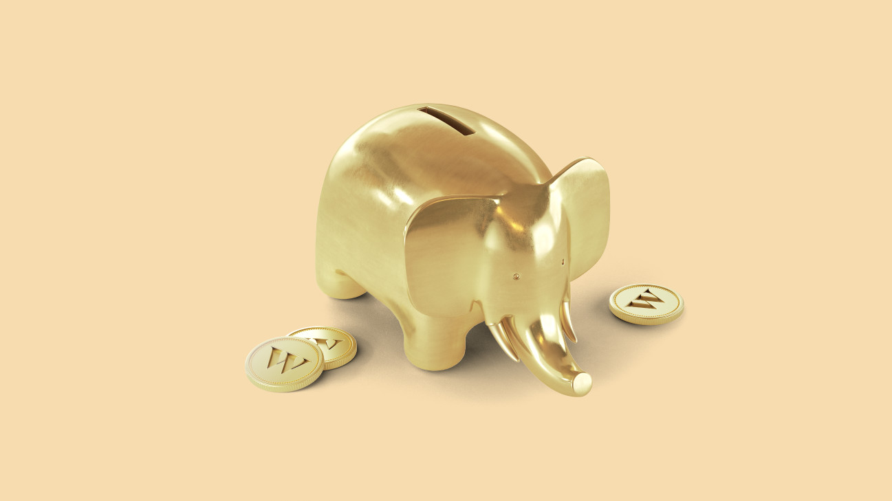

Written by WILL LEITCH
ON MARCH 17, 2021
Wealthsimple makes powerful financial tools to help you grow and manage your money. Learn more
You may have been hearing a lot about NFTs. Maybe it’s because the artist known as Beeple sold an NFT for $69 million. Or the DJ 3Lau NFT-izing his album and making more than $10 million off it. Even the Kings of Leon — for those too young to remember, they’re a Southern-rock group that had a moment in the early aughts and is now full of balding dudes in their late 30s — released their new album, “When You See Yourself,” as an NFT.
So it’s a good time to know what an NFT is and how it works and why it’s a lot more important than a few people becoming overnight rich people.
An NFT is a crypto asset. It’s not a currency you can use to buy things; instead, it lets you use the blockchain to authenticate something — like a piece of art, or an X-ray of someone’s teeth. (That’s real; see below!)
But what is it really? Let’s break it down by its letters. The T stands for token. A token incentivizes participants (miners, node operators, users, etc.) to support the chain's operations. Strictly speaking, it's just an individual unit programmed in the blockchain's code. (It's OK if you don't know what that means; here's our guide.) The NF stands for non-fungible. Fungible is a fancy word that means a unit of something that's interchangeable. Ethereum and Bitcoin (or Canadian dollars), for instance, are fungible, which means each one is pretty much the same as any other. Something that’s non-fungible is, on the other hand, not interchangeable. It's unique. Which means it's not very useful as common currency, but it is very useful for making sure something is real and one-of-a-kind because the transaction history is on the open ledger on the blockchain.
Anyone can create an NFT on a blockchain that’s open, like Ethereum.
Again, an NFT isn’t like a dollar bill, where if I give you a dollar and you give me a dollar, we both have the same thing: one dollar. Instead, it authenticates a specific item that cannot be reproduced.
In the physical world, certifiably unique things are often called “collectibles.” It’s easy to see why both individuals and large corporations (especially in the entertainment industry) might want to segment their product into a series of NFTs. The biggest and best example of this is the NBA, whose TopShot program allows fans to buy individual highlights and “own” them forever. Highlights, by definition, can have no physical form, but they are constantly, perpetually being created. They are self-generating collectibles, like your old baseball cards, only infinite. And as NFTs they are more secure and less likely to be eroded by weather or time.
NFTs are a reminder that it’s often not the quality of the art or the collectibles that makes them valuable, it’s their uniqueness.
It’s actually harder to buy physical art, in the real world, than you might think. When’s the last time you went to Sotheby’s? But NFTs are democratizing the way valuable things are sold so they’re available everywhere, to anyone with an internet connection, regardless of where you live or who you know. Marketplaces like Zora, Rarible, CryptoPunks, Opensea and Foundation are some of them. Developers like Dapper Labs will sell you Cryptokitties (the original NFT crossover circa 2017 — they’re digital cats you can collect) or NBA TopShot (the contemporary version of trading cards). If you’re into gaming, Gods Unchained will sell you in-game assets as NFTs. If you want virtual real estate, Decentraland and The Sandbox are easier to use than local real estate brokers and you’ll never have to hear the phrase “sun-drenched eat-in-kitchen.”
NFTs have proven particularly popular among the arts because they allow someone to own, specifically, something that can otherwise be shared by anyone. This is why simply making a copy of that Grimes video and claiming ownership of it is as ridiculous as making a printout of “Whistler’s Mother,” taping it to your wall and then saying you own it.
WEALTHSIMPLE INVEST
Wealthsimple is investing on autopilot
Powerful financial tools to help you grow and manage your money.
Another key is that the art is sold by the creator, or the source. The only person who can verify its initial authenticity is the artist themselves. (You can fake a Picasso to all but the most-trained accessors.) But the NFT, and the blockchain behind it, makes fooling anyone impossible. And there’s often way more upside for the artist. Since the work is connected to the artist on the blockchain, the artist often gets a percentage of any secondary sales as a work of art goes up in value. If you bought a Basquiat for pennies and sold it for millions, the artist (or his estate) never got a cent of that secondary sale. That’s not the case with NFTs. It’s a way for artists to benefit more from the value of their art, instead of just rich collectors.
Bazillion-dollar meme cats and trading LeBron dunks are fun, but they’re not really the point. NFTs promise to change the way ownership works, the way buying and selling works, and it promises to change who benefits from commerce.
With an NFT, any asset can become “tokenized.” That means it can’t be copied or reproduced for free. It means that there’s a clear chain of ownership. And in the future, it could mean that power will be taken out of the hands of gatekeepers (banks, record labels, platforms) and given to creators (game developers, artists). Imagine a world where all songs are tokenized, so every artist got paid for every stream of that song without needing Spotify. Imagine a world where physical assets — real estate, luxury goods, etc. — can be represented by NFTs. That might mean you could borrow against your house without having to get it appraised or fill out a bunch of forms and paying middlemen who don’t do much.
This future isn’t here quite yet. While the art, or the Grimes song, or the Shatner teeth, or the LeBron dunk, may be unique on its own merits, the idea of buying and selling these things, to create this market for each of them, could very well end up flooded. That is actually what happened to baseball cards after their explosion in the ‘90s. Certain cards, the most-valuable cards, retained their value. But the market itself imploded with overloaded supply. The greater the flood of unique items entering the market, the less unique they seem. The NFT market feels like a gold rush right now, but if there is an endless supply of gold… how can gold stay valuable? It’s possible your shiny new token won’t seem young and fresh anymore. It’ll start to look old and balding. And you could end up wondering why you just spent all that money to own a Kings of Leon song no one else even knows.
Written By Will Leitch
{kind=link}